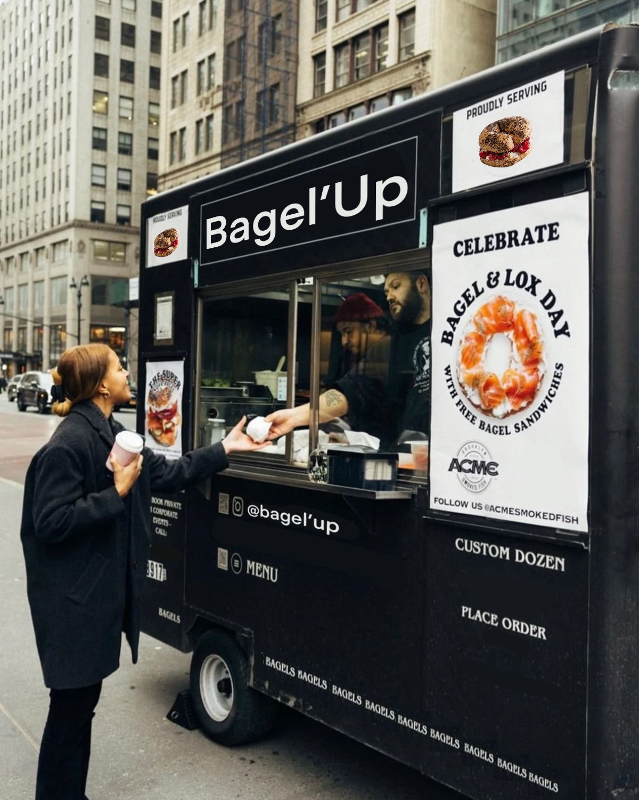

Bagel’Up offers a wide selection of bagels to satisfy everyone’s taste (including delicious vegetarian options!).
Our goal is to provide quick, high-quality food that’s full of energy and affordable for all budgets, perfect for eating on the go or simply enjoying a tasty meal wherever you are.
We are committed to offering high-quality cuisine for all our customers. That’s why we choose reliable ingredients, avoid waste by preparing the right portions every day, and use recyclable packaging to respect the environment.
We are mainly located at Place Bernard Tissot, near Rouen train station, but we can also travel anywhere in Normandy. For more details, feel free to check the Location section!
Now, let me tell you the story behind Bagel’Up.
One day, during lunch at a friend’s house, he offered me a bagel, something I had never tasted before. Since we had to walk around the city afterwards, it turned out to be the perfect meal for the moment. My friend had thought of everything.
I enjoyed it so much that, when I got home, I told my brother about it, he didn’t know bagels either. A few months later, I decided to develop this concept myself. After years of work and creation, here I am today with my Food Truck.
Later, I asked my friend how he came up with that meal that day, and he simply said: “I had nothing at home except two bagels and some ingredients, haha!”
